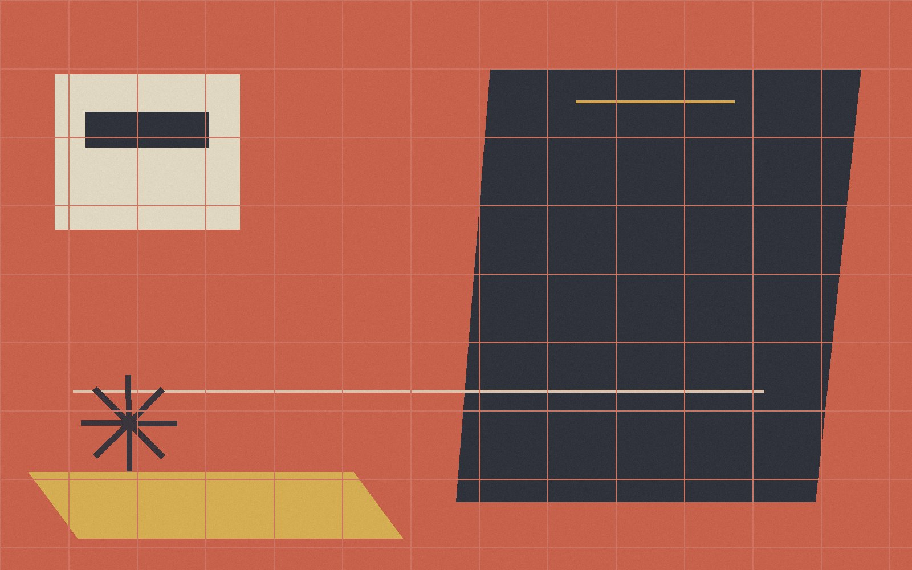

个人博客 · 2026
遇到你的那天所有星星都落到我头上
一起去很多地方
精选文章
全部文章最新文章
查看全部如何养成每天写一点的习惯
不靠意志力，靠三个足够小的原则：降低门槛、固定时间、别急着删初稿。
最近在读：三本书与三个问题
关于时间、重量与记忆的三次阅读，以及它们留给我的问题。
周末散步：重新发现熟悉的城市
两小时、三公里，在每天经过的地方，找到十件以前没注意过的事。
个人博客 · 2026
一起去很多地方

不靠意志力，靠三个足够小的原则：降低门槛、固定时间、别急着删初稿。
关于时间、重量与记忆的三次阅读，以及它们留给我的问题。
两小时、三公里，在每天经过的地方，找到十件以前没注意过的事。